Speech to Emotion Recognition

Classifying 6 emotions in English speaking audio with various Neural Network architectures. 74.3% test accuracy on best model.
Implementing and Optimizing Ray Tracing in C++

Optimizing serial Ray Tracing on CPU and GPU. ~2.5x and 200x speedup compared to serial.
Remote-Controlled Quadruped with Live Camera Feed and GUI Control
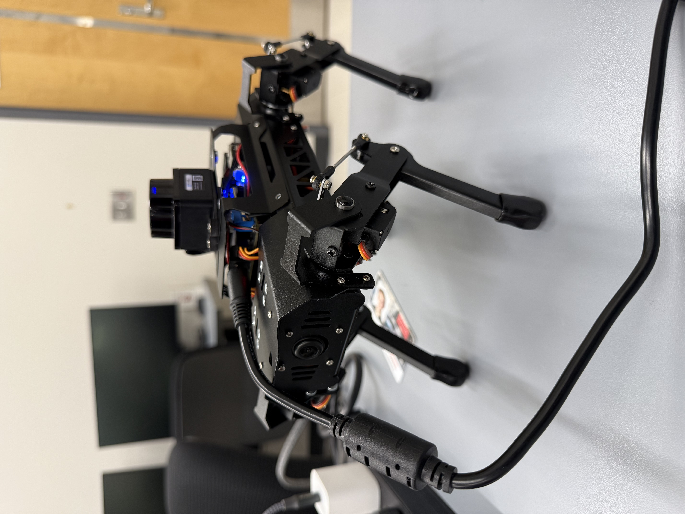Browser-based remote control system for the HiWonder PuppyPi with environment monitoring for overriding unsafe movement commands.
BeagleBone Black Traffic Light Controller
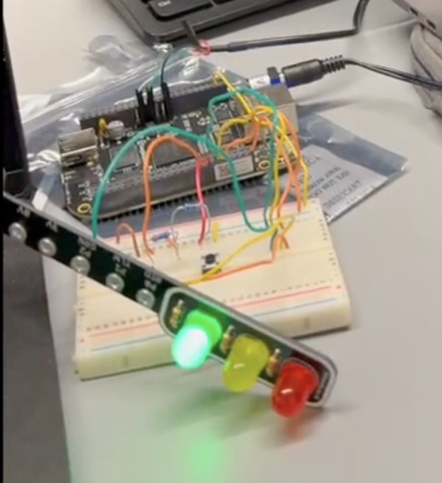Traffic light circuit written in kernel space, using GPIOs for 3 traffic modes and a preemptive pedestrian mode.
High Performance Programming
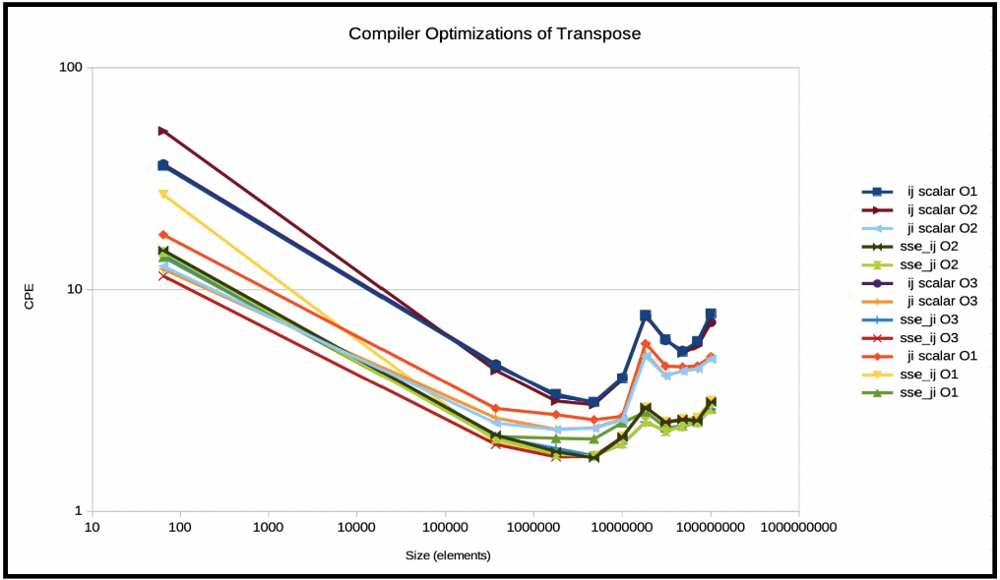Exploring CPU and GPU performance optimization techniques. Topics include memory hierarchy, pipelines, vectorization, multithreading, OpenMP, and GPU parallelism.
Jailbreaking Large Language Models
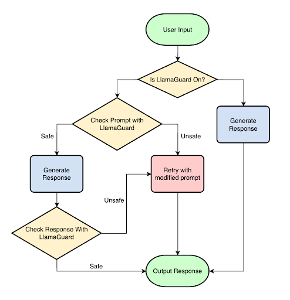Conducting comparative analysis of vulnerabilities in chatbots with PAIR. Developed a modular defense framework, delivering safe responses for 79% of jailbreaking prompts.
File Allocation Table-based File System
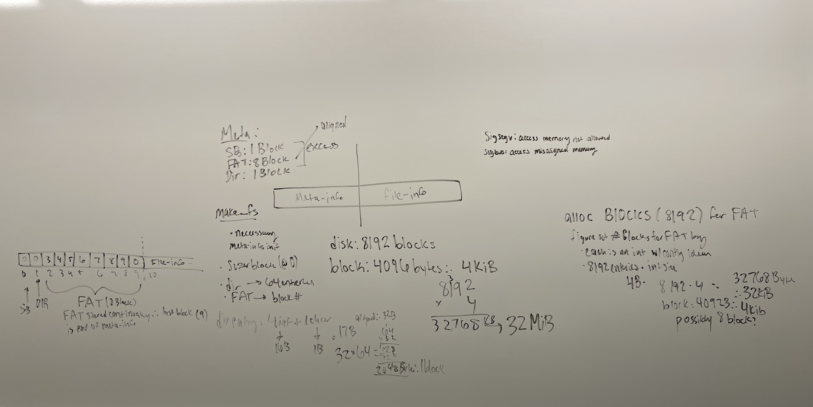Single root directory on a virtual disk that offers a set of basic file system calls to applications. Optimizied file storage capacity by 95%.
Operating Systems C Library Implementation

Implementing POSIX threads API with preemtive scheduling. Extended library with mulithreading, inter-thread communication, and thread-local-storage with COW (copy-on-write).
Simple Shell
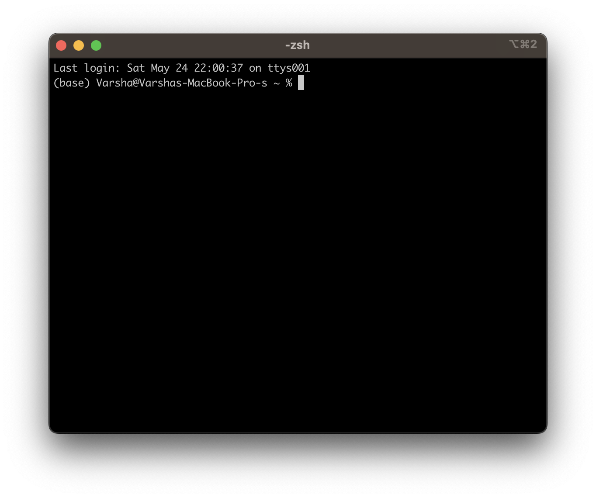Basic shell that can execute commands, redirect the standard input/output of commands to files, pipe the output of commands to other commands, and carry out commands in the background.
Dual-Tone Multi-Frequency Decoder
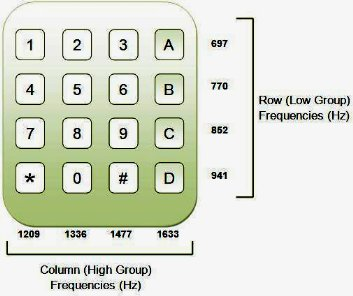Creating structures to decode DTMF signals using bandpass filters.
FPGA Calculator
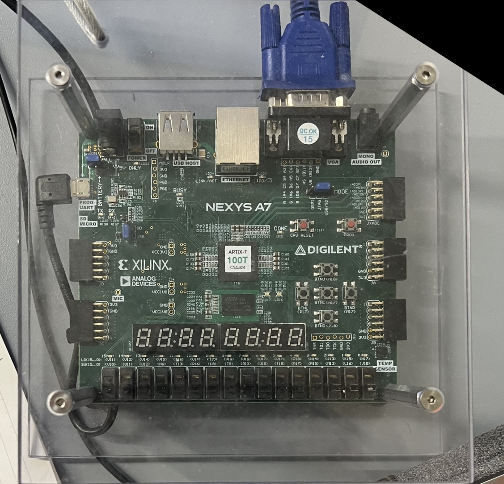4-bit basic ALU with 12 different operations, result on 7-segment display.
Smart Ambient Temperature Monitor
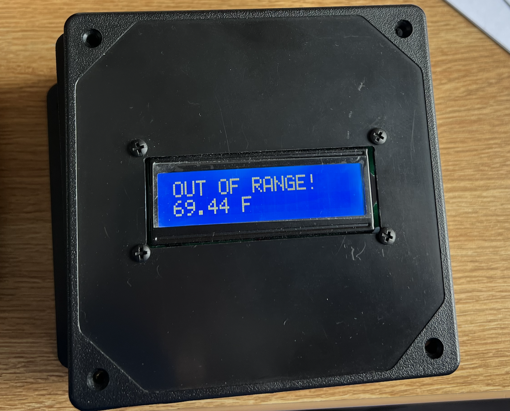Arudino-programmed low-energy temperature sensor alerting users of unsafe temperatures.
MunchMap Odyssey
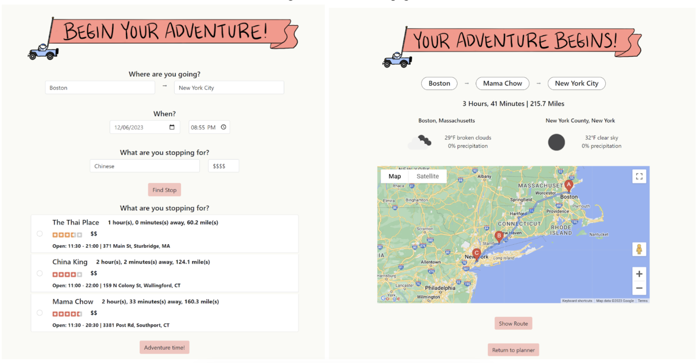Flask-based web application for road trip planning.
Limited Dexterity Smart Desk Lamp
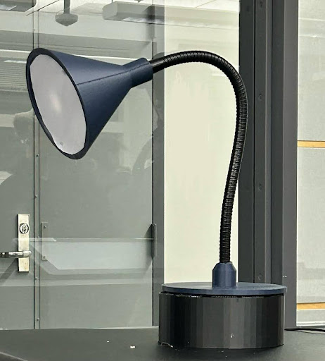Motion-driven controlled desk lamp for users with limited dexterity.
5-Stage Pipelined CPU
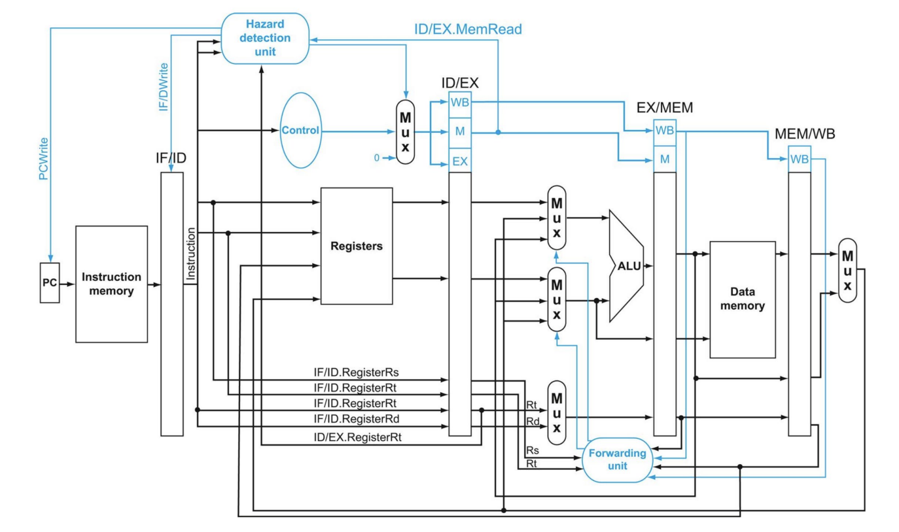Verilog implementation of 5-stage CPU with fowarding and Hazard Detection Unit, verified with simulation.
Reinforcement Learning-based Blackjack Agent
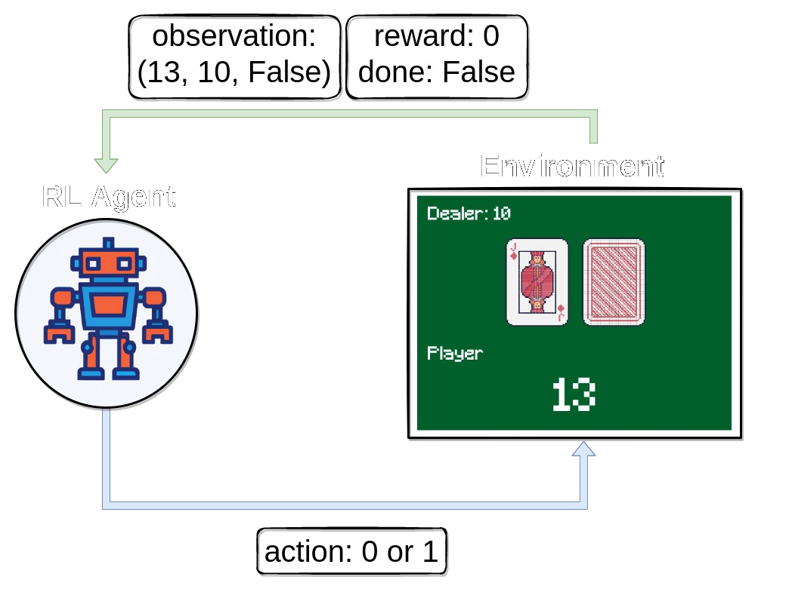Blackjack agent utilizing Q-learning algorithm to achieve ~42.1% win rate.